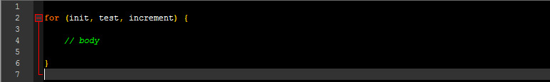
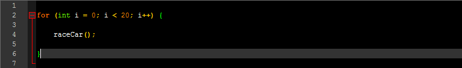
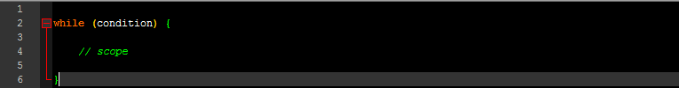
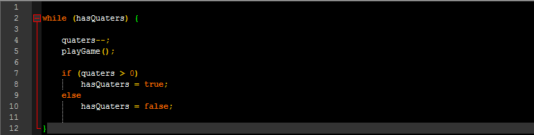
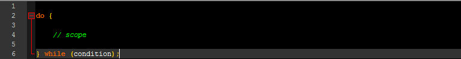
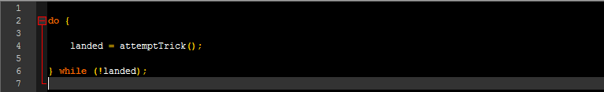

Saturday, July 29th, 2017 14:38 - PST
Have you ever built a super-sweet HotWheels™ track and wanted to give it a run for every car you have? Have you
ever played your favorite game at the arcade until you ran out of quarters? Have you ever attempted a new trick on your skateboard until you landed it? Well java has too! Well, sort of. With Java, if we want an action to repeat itself a given number of times, we use loops.
We would use for-loop, while-loop and do-while-loop to complete the examples above. FOR every HotWheel™ car you have, run it on the track. WHILE you have quaters, play your favorite arcarde game. DO(attempt) new skateboard trick, until you land it. WHILE you haven't landed the trick. Let's look at all of these one by one.
For Loop:
The for loop has four parts. The init, test or condition, increment, and the body or scope. The init will rune once at the beginning of the loop. It declares a varialbe and it's value. This variable will be used for counting. The test, or condition, compares the init variable to another value using an operator (i.e. <, >, ==). This will return a true or false value. If true, the loop will run again. The increment increases the value of the init variable, usually by one. So when the loop runs again, the test will compare the init variable with its new value the the other value. Last is the body, or scope. This is the code that will run everytime the test returns a value of true. Lets take a look.

This should help you understand the structure of a for loop. Now lets change this code to work for our HotWheels™ example. First we need to set the init. Now in programming, we know that we always start form zero when counting. Setting up our init should be the same. So we declare a variable and give it a value, int i = 0 Then we separate that from the other three with a semicolon, ;. Next, let's say we have 20 cars. So we would want to run this loop for every car. The test needs to compare the value of i to how many cars we have. i < 20; Also followed by a semicolon. Next, while i is less than the number of cars we have, we need to increas the value of i. i++ Now for the body, let's assume we already created a method to run the track on the car. We'll call the method, raceCar();. If we put all of our piece together, our for loop will look like this.

While Loop:
A while loop only has two parts, a condition and a scope. The condition returns a true or false value, and the the code in the scope will continue to run while the condition is true. The condition is usually a boolean variable, but can be populated with an operator comparing two variables. However, for our example, we are going to use a boolean. The while loop structure will look something like this:

For our arcade example, we are playing a game while we have quarters to play the game. So our boolean can be called hasQuaters. We place our boolean in the condition spot. Next we need to write our code that executes while we still have quarters. Let's assume we have an int called quaters and a method called playGame();. Every time we want to play the game it costs a quarter, so we lose one quater by writing quater--;. Then we play the game. After the game is done, we need to make sure we have enough quaters to play again. For this, let's use an if/else statement. So if (quaters > 0) is true, we set hasQuaters = true;. Otherwise, or else, we set hasQuaters = false;. When the condition returns false, we can no longer execute the code withing the scope of the loop. Our while loop will look like this:

Do While Loop:
The Do While loop is very similar to the While loop. It has a condition, and it has a scope. However, in our while loop example, if we never had quaters, the code in the scope would never execute. With a Do-While, the code in the scope runs at least once and then continues to run while the condition is true. Here is how a Do-While loop is structured:

So for our skateboard example. We want to learn a new trick, and we are going to attempt the trick at least once. So we have a public boolean attemptTrick(); which will return a true or false letting us know if we landed it or not. We also have a boolean that is set to false called landedTrick. This can only be set to true once the trick is landed. So our do-while will look something like this:

Copy and past won't help you. You should type out the code above.